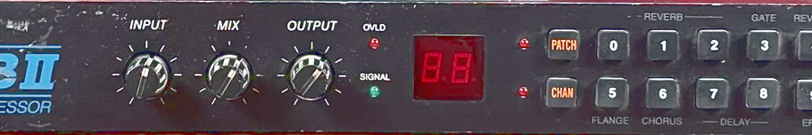

Midiverb I/II Emulator Demo

Start Audio
Mute effect input
Stop Audio
Engine:
Emulated (ROM)
Decompiled (native JS)
Decompiled (native JS) with VST resampling
Device:
MIDIVerb
MIDIFex
MIDIVerb 2
Effect:
Mixing desk Dry/Wet Mix
Mixing desk Feedback (DANGEROUS, goes to 250%)
Sound Source:
Example WAV
Sine Wave Blip (440Hz, 100ms)
Sine Wave (440Hz, 25% vol, 2s)
Noise Burst (250ms)
Impulse (click)
Maj7 Chord Sweep
Custom WAV...
sources at
https://github.com/thement/midiverb_emulator
code by thement at ibawizard do net
Fill DRAM with Random Numbers
- LOUD! Check how it sounds right after Power-On